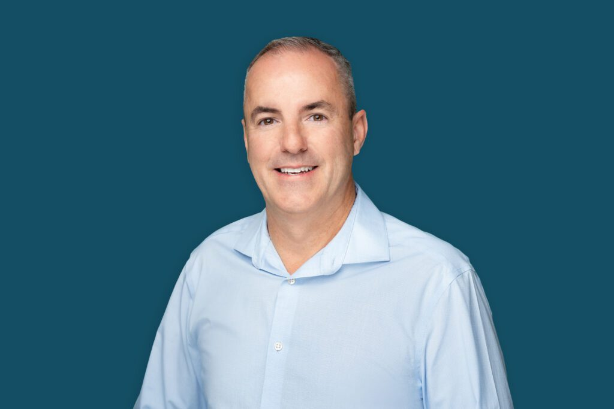

About Rennie GRC
Experience focused on managing IT risk.
Rennie GRC helps organizations give technology risk, compliance and audit work sustained attention.
I'm Robert Rennie, founder of Rennie GRC. I've spent more than 20 years working with business technology—from hands-on systems and infrastructure to cybersecurity, IT audit and technology risk.
I started Rennie GRC to help organizations identify what matters, translate technical issues into business risk, keep remediation moving and give leadership a clearer view of technology risk.
Rennie GRC works alongside management, internal IT teams, MSPs, vendors and auditors. The focus is independent risk oversight, practical controls and follow-through—not replacing the people who operate your technology.
Need a dedicated focus on IT risk?
Start with a conversation about your risk, compliance or audit needs.
Contact Rennie GRC